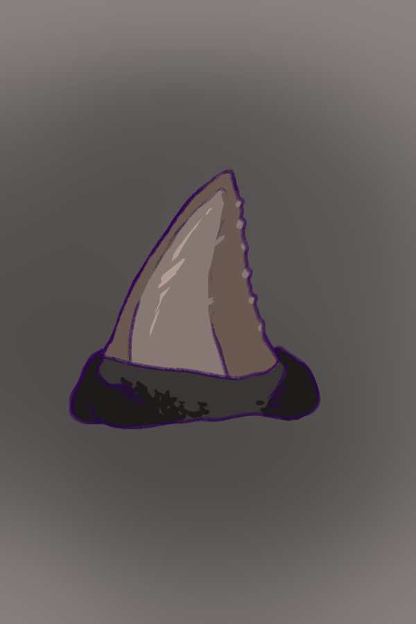
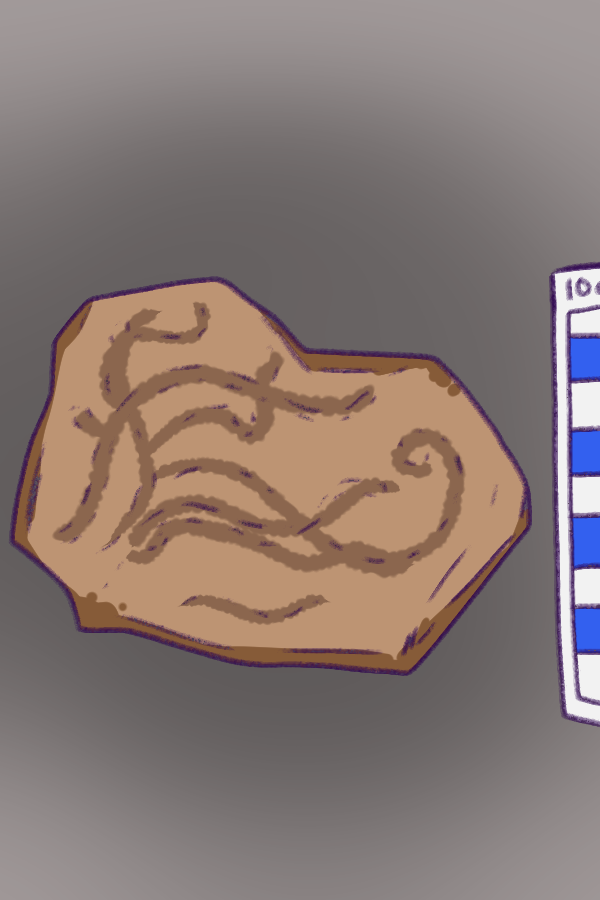

All images were drawn by a human. AI assistance used for interpretive text.
Stormcaller Fish Fossil

Facts
Material: Mineralized bone and stone matrix
Function: Ritual weather charm
Location Found: Shatterreef Basin
Interpretation
Coastal communities often relied on subtle environmental changes to predict dangerous weather. The Stormcaller fossil is believed to represent one such natural indicator, transformed into a ritual object through cultural practice. The hollow cranial structure suggests that the fossil may have produced low tones when wind passed through it. Oral traditions describe elders placing the fossil near shorelines or in elevated structures where air currents could move through the cavity. The resulting sounds were interpreted as warnings from the sea.
Over time, the fossil likely took on symbolic meaning beyond its practical use. Communities may have associated its sounds with ancestral spirits or ocean deities, turning it into a protective charm. Its worn edges indicate repeated handling, suggesting it may have been carried during journeys or hung near dwellings. The object's dual role as both a tool and a sacred item reflects the close relationship between survival practices and spiritual belief in coastal cultures.
The Stormcaller fossil illustrates how natural objects were adapted into ritual systems. Rather than relying solely on scientific understanding, early societies interpreted environmental signs through myth, story, and ceremony. The fossil stands as a reminder of the ingenuity and imagination of ancient coastal peoples.
Comparative Notes
Similar weather charms have been found in other coastal regions, including shell whistles and carved bone horns used to signal storms.
Cautionary Note on Interpretation
The acoustic function of the fossil remains unproven. Much of its interpretation relies on oral tradition and symbolic analysis rather than direct evidence.
On display courtesy of
The Shatterreef Coastal Excavation Project.
Tidal Reaper

Facts
Material: Unknown crystalline alloy
Function: Ceremonial weapon
Location Found: Blackglass Cavern
Interpretation
The Tidal Reaper appears to have held ceremonial significance rather than practical combat use. Its smooth, seamless construction suggests it was shaped through processes other than traditional forging. Some researchers propose it was grown or chemically formed, possibly in mineral-rich environments where crystalline structures developed over time.
The blade's faint resonance has inspired numerous legends. Some traditions describe it as a symbolic tool used in rituals meant to “harvest” bad fortune or cut ties with dangerous tides. The markings near the handle resemble ceremonial patterns rather than combat wear, reinforcing the theory that it was used in performances or leadership rites.
Objects like the Tidal Reaper often served as visual representations of authority. A leader or ritual specialist might have carried it as a sign of status or spiritual responsibility. Its unusual material and preserved condition suggest it was carefully maintained and possibly displayed during important gatherings.
Comparative Notes
Ceremonial blades have been documented in many cultures, often used in rituals instead of warfare.
Cautionary Note on Interpretation
The blade's material has not been conclusively identified, and its resonance may be caused by structural features rather than intentional design.
On display courtesy of
The Blackglass Cavern Survey Team.
Luminous Flesh Coral

Facts
Material: Calcified organic tissue
Function: Living light source
Location Found: Deep trench chamber
Interpretation
The Luminous Flesh Coral is believed to have once emitted a soft bioluminescent glow. Even in its preserved state, traces of this light-producing structure remain visible. Growth patterns suggest that the coral was not simply collected from the ocean floor, but carefully cultivated in clusters, possibly within controlled underwater environments or cave chambers.
Some researchers believe ancient communities encouraged the growth of these corals along cave walls or around ceremonial areas. The soft glow would have provided natural illumination in dark environments, creating a calm and atmospheric light source. Unlike fire, which consumes fuel and produces smoke, a living coral light would have been safer in enclosed spaces.
Beyond its practical function, the coral likely carried symbolic meaning. Light emerging from living tissue may have represented rebirth, guidance, or the presence of spirits. In ritual contexts, the glow could have created dramatic visual effects, reinforcing the sacred atmosphere of ceremonies.
Fragments of similar coral have been found near altars and ceremonial platforms, suggesting it may have been offered as a sacred object. Some accounts describe processions where glowing coral pieces were carried through dark tunnels, creating moving lines of light.
The Luminous Flesh Coral illustrates the blending of biology, symbolism, and ritual practice. It reflects the creativity of ancient communities in using natural resources not only for survival, but also for spiritual and aesthetic purposes.
Comparative Notes
Bioluminescent organisms have been used as light sources in various coastal and cave-dwelling cultures.
Cautionary Note on Interpretation
The intensity and duration of the coral's glow are not fully known, and its cultivation remains a theoretical reconstruction.
On display courtesy of
The Deep Trench Biological Survey.
Abyssal Fang

Facts
Material: Fossilized dentin and enamel
Function: Protective ornament
Location Found: Reef burial mound
Interpretation
The Abyssal Fang is believed to have been worn as a protective charm by coastal peoples who lived in close relationship with large ocean predators. The tooth's size and drilled opening suggest that it was intentionally modified for use as a pendant or talisman. Its smooth edges and surface wear indicate it was handled frequently, likely worn daily rather than reserved for ceremonial occasions.
Many coastal societies viewed powerful animals as spiritual guardians or embodiments of strength. Wearing the tooth of such a creature may have been seen as a way to borrow its courage and resilience. The fang's placement in burial mounds suggests it carried symbolic importance beyond practical use. Some individuals were interred with similar objects positioned over the chest or near the hands, indicating the item may have served as a companion into the afterlife.
The fang also reflects the practical realities of ocean life. Early communities depended on fishing and seafaring, environments where encounters with predators were possible. A protective charm would have provided psychological reassurance, reinforcing bravery and unity during long voyages.
Scratches along the surface hint at contact with tools or armor, suggesting it may have been used during ritual combat or coming-of-age trials. Such ceremonies often tested endurance and courage, and wearing the fang may have symbolized readiness to face the dangers of the sea.
The Abyssal Fang represents the blending of practicality, symbolism, and spiritual belief. It demonstrates how natural objects were transformed into powerful cultural symbols that guided both daily life and ceremonial traditions.
Comparative Notes
Similar predator-tooth ornaments have been found in island and coastal cultures worldwide, often associated with protection and warrior status.
Cautionary Note on Interpretation
While the drilled hole suggests use as a pendant, the exact meaning of the fang may have varied between communities and time periods.
On display courtesy of
The Reef Burial Mound Excavation Team.
Whispering Conch
Facts
Material: Fossilized ammonite shell
Function: Ritual decision tool
Location Found: Tidal flat ceremony site
Interpretation
The Whispering Conch is believed to have served as a symbolic oracle in coastal communities. Its spiral shape and hollow interior produce faint echoes when held to the ear, a feature that may have inspired beliefs that it carried the voice of the sea. In ceremonial settings, leaders or elders would hold the shell before making important decisions, listening for signs or guidance.
While it is unlikely that the shell produced meaningful speech, the ritual itself may have been more important than the sound. The act of pausing, listening, and reflecting before making a decision would have encouraged careful thought and communal consensus. In this way, the conch functioned as a symbolic tool for contemplation rather than literal prophecy.
The shell's polished edges suggest it was handled frequently. Its presence in ceremonial sites indicates it played a role in gatherings where important matters were discussed. The spiral form, often associated with cycles, growth, and journeys, may have reinforced its meaning as a guide through uncertain situations.
Some traditions describe participants asking the conch direct questions, interpreting the resulting sounds as approval, denial, or uncertainty. Such practices are common in many cultures, where symbolic objects help structure decision-making rituals.
The Whispering Conch highlights the importance of reflection, symbolism, and shared ritual in early societies. Rather than relying solely on authority, communities may have used objects like this to encourage thoughtful choices and collective responsibility.
Comparative Notes
Shell oracles and sound-producing ritual objects appear in many coastal cultures, often used during councils or spiritual ceremonies.
Cautionary Note on Interpretation
There is no direct evidence that the shell was used as an oracle; this interpretation is based on wear patterns and its ceremonial context.
On display courtesy of
The Tidal Flat Cultural Survey.
Tideleaf Impression

Facts
Material: Stone slab
Function: Decorative or symbolic object
Location Found: Cliffside dwelling site
Interpretation
The Tideleaf Impression is a fossilized imprint of ancient sea vegetation preserved in stone. Its carefully polished edges suggest that it was valued as more than a simple geological curiosity. Instead, it appears to have served as a decorative or symbolic object within domestic or ceremonial spaces.
The branching patterns of the fossil resemble growing plants, making it a natural symbol of renewal, fertility, and the cycles of the ocean. Coastal communities may have placed such objects near doorways or sleeping areas as protective charms. The image of a growing plant could have represented stability and life, offering comfort in an environment shaped by unpredictable tides and storms.
Some researchers believe the impression may have been used during seasonal rituals. The turning of tides and shifting ocean currents were powerful indicators of time and change. A fossilized plant, preserved in stone, may have symbolized continuity and endurance across generations.
Traces of pigment along one edge suggest it may once have been painted or decorated. This indicates the object was not only functional or symbolic, but also aesthetic. Its presence in communal living spaces suggests it held shared meaning, perhaps representing the health and prosperity of the group.
The Tideleaf Impression reflects the close relationship between ancient coastal peoples and the natural cycles around them. It demonstrates how even simple natural objects could take on deep symbolic meaning within daily life.
Comparative Notes
Plant and leaf fossils have been used as decorative or symbolic objects in multiple ancient cultures.
Cautionary Note on Interpretation
There is limited evidence of its specific use, and the symbolic interpretation is based primarily on context and wear patterns.
On display courtesy of
The Cliffside Dwelling Archaeological Project.